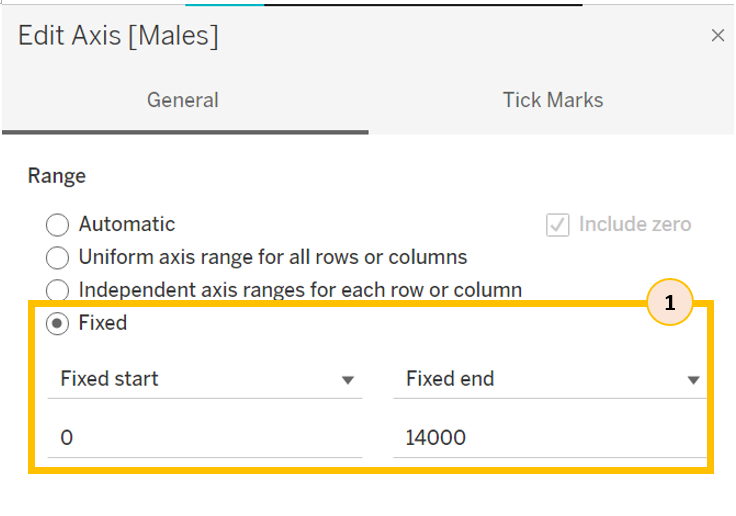
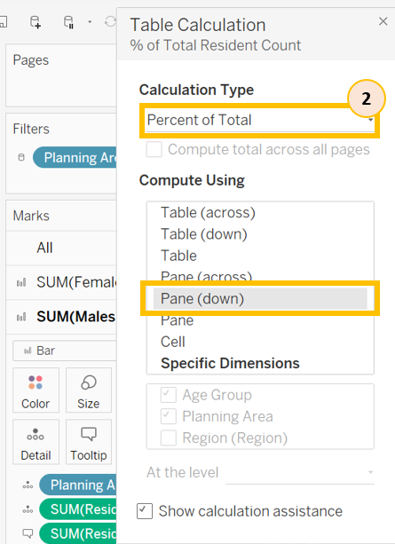
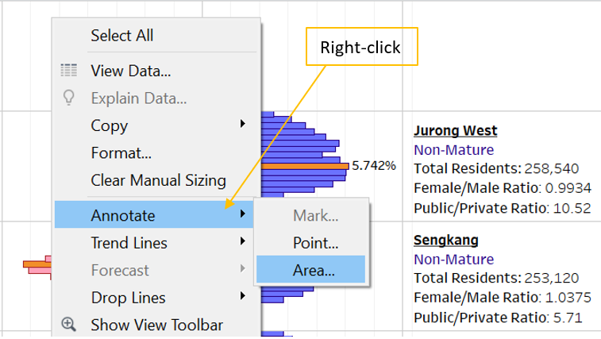
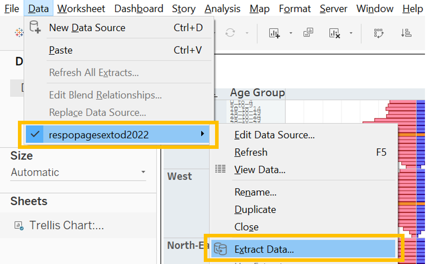

Take Home Exercise 1
1. Overview
In this take-home exercise, we will explore using age-sex pyramids to showcase the age and gender composition of Singapore population in nine selected planning areas on single view using trellis display.
Selection of planning areas
In each of the 5 regions, we select 1 largest mature and 1 largest non-mature planning areas, based on number of residents. In East and North regions, only mature or non-mature estates are available, hence, 2 planning areas of the same maturity are selected in these 2 regions.
2. Dataset
The dataset used, Singapore Residents by Planning Area / Subzone, Age Group, Sex and Type of Dwelling, June 2022, can be retrieved from the Singapore Department of Statistics home page.

Additional information on regions and maturity of the planning areas were referenced from Wikipedia and PropertyGuru Singapore to provide more insights to the readers. The additional information consolidated can be retrieved from Github.
3. Preparation Steps
3.1 Preparing the data in Tableau
| Step | Description | Screenshot |
|---|---|---|
| 1. | Load the csv file into Tableau. Click “Connect to Data”, select “Text file” and choose the CSV file to connect to |
 |
| 2. | View the Notes. Click on “View data” beside “Notes” for the view data screen to appear. |
 |
| 3. | Rename the columns according to the data in Notes. In the viewing panel on the right, click the down arrow button beside each field name and select “Rename” to change the name according to table shown in step 2. |
|
| 4. | Save the Tableau file. Click on “Save” button |
 |
| 5. | Adding additional information on region and maturity. Click “Add” and select “Microsoft Excel” to choose the file to add. |
 |
| 6. | Build the connection with “Maturity”. 1. Drag “Maturity” to the right until a line is form to connect to the original data. 2. Select “Planning Area” = “Planning Area1” |
 |
| 7. | Build the connection with “Region”. 1. Drag “Region” to the right until a line is form to connect to the original data. 2. Select “Planning Area” = “Planning Area (Region)” |
3.2 Select 9 planning areas
| Step | Description | Screenshot |
|---|---|---|
| 1. | Selecting the 9 planning areas based on highest resident count and when possible, choose 1 mature and 1 non-mature area in each region. 1. Click on sheet 1, drag “Region” into Columns and drag “Planning Area” and “Maturity” into Rows, then place “Resident Count” as the table content. 2. Sort each region to find out the planning areas with highest resident count. The 9 selected planning areas: Central - Bukit Merah (Mature) East - Bedok (Mature), Tampines (Mature) North - Woodlands (Non-mature), Yishun (Non-mature) North-East - Sengkang (Non-mature), Ang Mo Kio (Mature) West - Jurong West (Non-mature), Clementi (Mature) |
 .png) .png) .png) |
| 2. | Apply filter to dataset. Drag “Planning Area” into filter, select the 9 planning areas listed in previous step and click “Apply”. |
.png) |
| 3. | Apply filter to all worksheets. Click on “Planning Area” under filter, select “Apply to Worksheets” and “All Using This Data Source”. |
3.3 Plotting the charts
| Step | Description | Screenshot |
|---|---|---|
| 1. | Create calculated field for female and male resident count Under Analysis, click “Create Calculated Field”, create a calculated field - “Female” by keying in the formula shown on the right, then repeat the step and create another calculated field - “Male”. |
|
| 2. | Create the base for age-sex pyramids Drag “Females” and “Males” onto Columns and drag “Age Group” onto Rows. |
|
| 3. | Create calculated field - Index Under Analysis, click “Create Calculated Field”, create a calculated field - “Index” by keying in the formula shown on the right. |
 |
| 4. | Create parameter - Number of Columns On Data panel, right click on empty space and select “Create Parameter…” On Edit Parameter screen, change the name and key in Current value of 2 |
 |
| 5. | Create calculated field - Columns Under Analysis, click “Create Calculated Field”, create a calculated field - “Columns” by keying in the formula shown on the right. Once the calculated field “Columns” is created, right click on it on the Data panel, and select “Convert to Discrete” |
|
| 6. | Build trellis display 1. Drag “Columns” to Columns and drag “Region” to Rows 2. Drag “Planning Area” to Detail 3. Right click on “Planning Area” under Detail and select compute using “Planning Area” |
 |
| 7. | Edit X-Axis of “Females” 1. Right click “Females” on X-axis and select “Edit Axis”. 2. Select “Fixed” under range and set Fixed start to 0 and Fixed end to 14000. Check “Reversed” under Scale. 3. Navigate to “Tick Marks”, set Major Tick Marks to “Fixed” and set Tick interval to 2000. |
|
| 8. | Edit X-Axis of “Males” Right click “Males” on X-axis and select “Edit Axis”. 1. Select “Fixed” under range and set Fixed start to 0 and Fixed end to 14000. 2. Navigate to “Tick Marks”, set Major Tick Marks to “Fixed” and set Tick interval to 2000. |
.png) |
| 9. | Change fill and border colors Click on color, select red fill and border line for “Females” and blue for “Males” for more intuitive visualization. |
 |
| 10. | Sort the charts by resident counts 1. Drag “Resident Count” onto Tooltip 2. Right click on “Planning Area” under “All” panel, and select Sort 3. Select sort by “Field” and set Field Name as “Resident Count” 4. Click on the triangle icon beside Region under Rows, Select sort by “Field” and set Field Name as “Resident Count” |
.png) |
3.4 Creating calculated fields for additional insights
| Step | Description | Screenshot |
|---|---|---|
| 1. | Create calculated field - Female-to-Male Ratio Under Analysis, click “Create Calculated Field” to create a calculated field - “Female-to-Male Ratio” by keying in the formula shown on the right. |
 |
| 2. | Group type of dwelling into public, private and others 1. Right click on Type of Dwelling, select “Create” and the “Group” 2. Select the respective dwelling types and click Group, once all the 3 groups have been formed, click “Apply”. |
 .png) |
| 3. | Create calculated field - Public/Private Ratio Under Analysis, click “Create Calculated Field” to create a calculated field - “Public/Private Ratio” by keying in the formula shown on the right. |
 |
| 4. | Create calculated field - Top Age Group Under Analysis, click “Create Calculated Field” to create 2 calculated fields - “TopAgeGroup-Female” and “TopAgeGroup-Male” by keying in the formula shown on the right. |
 |
| 5. | Create calculated field - Window Resident Count Under Analysis, click “Create Calculated Field” to create a calculated field - “Window Resident Count” by keying in the formula shown on the right. |
 |
| 6. | Add a line plot on Female-to-Male ratio Drag “Female-to-Male Ratio” to Columns, click on the triangle icon and select compute using “Cell”. Right click on the X-Axis for line plot, select “Edit Axis” to edit the title to “F/M Ratio” |
3.5 Adding labels and tooltips
| Step | Description | Screenshot |
|---|---|---|
| 1. | Create AVG(1) Type AVG(1) into Columns. |
|
| 2. | Change chart type and color opacity Click on the dropdown button beside “Bar” and select “Line”. Then click on Color and adjust opacity to 0%. |
 |
| 3. | Adding labels 1. Drag “Planning Area”, “Maturity”, “Window Resident Count”, “Female-to-Male ratio” and “public/private ratio” onto Label 2. Right click on “Maturity” and select “Attribute” |
.png) |
| 4. | Edit label 1. Click on “Label” and click 2. Edit Label according to the screenshot on the right. |
 |
| 5. | Edit tooltip for AVG(1) 1. Click on Tooltip and edit tooltip according to the screenshot on the right. |
|
| 6. | Edit X-Axis for AVG(1) Right click on AVG(1) on the X-axis 1. Select “Uniform axis range for all rows or columns”, check “Reversed” under Scale, and remove the axis title. 2. Navigate to “Tick Marks”, select “None” under Major Tick Marks |
|
| 7. | Add labels for “Males” (Max) 1. Drag Resident count onto Label under SUM(Males), click the dropdown and select “Add Table Calculation” 2. Select “Percent of Total as Calculation Type and compute using”Pane (down)“ 3. Click on Label and check”Show mark labels, select “Min/Max” and uncheck “Label minimum value” |
 |
| 8. | Add labels for “Females” (selected) 1. Drag “Females”, “Males” and “Resident Count” onto Label under SUM(Females), click the dropdown and select “Add table calculation” 2. Select “Percent of Total as Calculation Type and compute using”Pane (down)“ 3. Click on Label and check”Show mark labels and select “Selected” |
|
| 9. | Highlight the top age group in each planning area Drag “TopAgeGroup-Female” to color under SUM(Females) and drag “TopAgeGroup-Male” to color under SUM(Males) |
.png) |
| 10. | Adjust tooltips for SUM(Females) and SUM(Males) Drag “Females”, “Males”, “Female-to-Male ratio” and “Maturity” onto tooltip under both SUM(Females) and SUM(Males). Edit the tooltip as shown on the right. |
 |
| 11. | Add label for F/M Ratio Drag “Females-to-Males ratio” onto Label, click on Label, check “Show mark labels”, select “Min/Max” and deselect “Label minimum value”. |
3.6 Formatting
| Step | Description | Screenshot |
|---|---|---|
| 1. | Change sheet name Double click on sheet name to rename, type in “Trellis: Age-Sex Pyramids”. |
|
| 2. | Hide field labels for Columns Right click on “Columns” and select “Hide Field Labels for Columns”. |
|
| 3. | Hide header Right click on “1” or “2” at the column header and deselect “Show Header”. |
|
| 4. | Format column shading and fonts Right click on column/row header, select “Format” and edit the shading, font size, and bold the header font. |
|
| 5. | Annotate Right click on the empty area on the chart, select “Annotate” and “Area”, type in the text shown on the right and adjust the size of the box to fit the empty area. |
 |
3.7 Dashboarding
| Step | Description | Screenshot |
|---|---|---|
| 1. | Add new dashboard Click on at the bottom of the page to create a new dashboard. Drag “Trellis: Age-Sex Pyramid” sheet from the Dashboard panel onto the space in the right. Under Size, select “Automatic” |
|
| 2. | Edit title Double click on the title to edit the title to “Trellis Display: Age-Sex Pyramids of 9 planning areas located in 5 regions in Singapore in 2022” |
|
| 3. | Add descriptive text Drag “Text” from the Objects panel onto the charts. Adjust the height of the text box, double click on the text box to key in the text as shown on the right. |
3.8 Publishing to Tableau Public
| Step | Description | Screenshot |
|---|---|---|
| 1. | Extract Data Under Data, select “Extract Data” and save the .hyper file. |
 |
| 2. | Publish to Tableau Public Under Server, select “Tableau Public” and “Save to Tableau Public”. |
4. Trellis Display: Age-Sex Pyramids

The interactive visualization can now be viewed on Tableau Public.
5. Key Observations
1. Population size varies greatly across planning areas (PA), outer edges of Singapore more populated.
From the trellis display, we observed that Bedok, Tampines, Jurong West, Sengkang, Woodlands and Yishun are significantly more populous than the other 3 PAs. We have mapped out the locations as shown below and observed that the more populous PAs are all located at outer edges of Singapore, and the 3 less populous PAs are either located near to or in Central Region.

2. Mature estates have larger proportion of aged residents.
The 3 mature PAs - Bukit Merah, AngMoKio and Clementi have 16.5%, 16.1% and 14.6% of their residents above 70 years old respectively. These proportions are much higher as compared to the 4 non-mature PAs (Woodlands, Yishun, Sengkang, Jurong West), with only 6.51% to 8.69% of their residents age above 70. This observation is consistent with the PA’s maturity. As mature PAs have been around for longer (>20 years), it’s logical to have composition of older residents.
Although the 2 mature PAs in East Region (Bedok, Tampines) have slightly lower proportion of residents above 70, at 13.75% and 9.58% respectively, their proportion of residents above 60 is at a similar level to that of Bukit Merah, AngMoKio and Clementi.
3. In the same region, non-mature PAs are more populated than mature PAs.
For regions with both mature and non-mature PAs, the biggest non-mature PA in the region has significantly more residents than the biggest mature PA in the same region. This is observed from both West and North-East Region. The biggest non-mature PA in West Region, Jurong West is 1.75x more populous than Clementi, the biggest mature PA in the West. Also, Sengkang, the biggest non-mature PA in North-East Region has 57% more residents than the biggest mature PA in North-East, Ang Mo Kio.
4. High proportion of young families in Yishun, Woodlands, Sengkang and Tampines.
As evident from the trellis chart, these 4 PAs seem to be preferred by younger residents in their 20s and 30s. Besides, these PAs also have higher proportion of children under 10, as compared to other selected PAs. This indicates a pool of relatively younger families residing in these 4 PAs.
5. Shift in age distribution after age 70, with Females-to-Males ratio peaks after age 90 across all PAs.
The line charts show that female-to-male ratio follows a constant uptrend after age 70, with female population more than double the male population at age 90 onward. This is unsurprising as statistics have shown that females have longer average life expectancy than males in Singapore. Additionally, a small bulge is also observed on the female-to-male ratio at age 30s to 40s, and the reason behind this bulge might be worth investigating.
6. Bedok has highest proportion of private housing, while Woodlands has highest proportion of HDB dwellers.
In 2022, approximately 20% of residents resided in private housing in Singapore. Given this statistic, Bedok seems to be more prestige as 36.7% of residents here resided in private housing. Of all the private housing residents in Singapore, 11.3% of them reside in Bedok. Woodlands, on the other hand, has 92.3% of its residents residing in public housing.
6. Future Work
The above observations are extracted based on only 9 selected PAs, we can expand this study to all 55 PAs to find out if some of the observations persist.